Södermalm i tid och rum. Stockholm
Karta 1733 Karta 1836 Karta 1885 Karta 1902 Karta 1922 Karta 2000 Ur Stockholms gatunamn
Anledningen till namnet har varit att här funnits ett tegelbruk. Gustav Vasa gav1547 några borgare i Stockholm rätt att »vpbyggie och vptage thenn Tegellade medt Tegelhusset, och andre äger... liggiendis vthe på Södermalm. Tegellwickenn och ther strax offwann fore som thet tilfförendhe /förut/ medtLeer och sandtgraffning waridt haffwer ...» Det säges i brevet att »samme Tegellade och Vgnn nu j lång tijdthaffwer i öde ligatt».
Namnet Tegelviksgatan (Tegelwijkzgatan 16963) har tidigare burits av en gata, som gick från östra delen avTegelviken sydväst ner mot Bondegatan öster om kvarteret Gruvan. Nuvarande Tegelviksgatan fick sitt namn 1926efter förslag av NB 1921; det ersatte då namnet Skurugatan, som kommit till vid namnrevisionen 1885 »för dengata från Folkungagatan till Hammarby Strand, som går närmast öster om och jämnlöpande med Barnängsgatan».
Nuvarande Tegelviksplan har tidigare kallats Tegelvikshamnen (18494), därefter Tegelviks torget (1870); detta senarenamn ersattes 1925 av Tegelvikshamnen, som i sin tur utbyttes mot Tegelviksplan 1927.
Under 1800-talets förra hälft, när segelfartygen ännu behärskade Stockholms ström, fanns det tremera betydande varv i Stockholm: Stora eller Södra varvet, Djurgårdsvarvet och Långholmsvarvet.


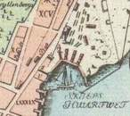
1733
Varvstomten var ett utplanat och utfyllt trekantigt område mellan Erstaberget och Tjärhovsgatan..Längst ner vid viken låg stapelbäddarna. Mot berget och det höga planket utmed gatan fanns två bodlängor med materialskjul, plankbodar, mallbod och tackelbod, vidare en klockstapel med vällingklockaoch en smedja. Den öppna platsen mellan bodlängorna fylldes under 1800-talets lopp med nya bodaroch skjul.
| I viken nedanför stapelbäddarna låg hamnen. Den var i norr och söder omgiven av såkallade bråbänkar med beckgrytor, mastkranar och andra anordningar för att kölhala fartyg, såatt man kunde rengöra, lappa eller »tjärbrå» botten. Under det branta bergstupet innanför norra bråbänken fannsginbodar, tjärbodar, spruthus och slupskjul. Allteftersom åren gick, fylldes den smala strandremsannedanför bergets nordsida ut och beslogs med pålar och hammarband. Här tronade i ensamtmajestät över vattnet ett »avträdesrum av korsvirke och bräder i brukbart skick», som det heter i ettgammalt inventarium. Längst upp i vinkeln mellan berget och Tjärhovsgatan låg ett bostadshus av sten. Det var nybyggt 1748 efter ritningar av stadsarkitekten Johan Eberhard Carlberg. På nedre botten hade varvsbokhållaren sin bostad och sitt kontor, i övre våningen bodde skeppsbyggmästaren. Där hade han sitt ritkontor, och en sal var reserverad för intressenternas sammankomster. Huset är det enda som nu återstår av det gamla varvet, det har adressen Folkungagatan 119 och disponeras av Sofia ungdomsråd. |
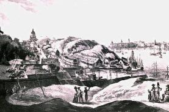  Erstaklippan och Tegelviken sett från Fåfängan. Troligen omkr 1800.
Erstaklippan och Tegelviken sett från Fåfängan. Troligen omkr 1800. |
|
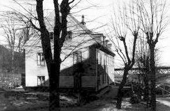 Stockholms stads spädbarnshem, Folkungagatan 119, invigdes 1919, men var tidigare Stora varvets kontor. Uppfört 1748 som änkesäte för Braheätten. |
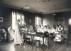 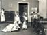 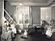  |
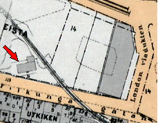
Skeppsbyggmästaren var varvets hjärna och styresman. En rad dugande byggmästare har under |
årens lopp spritt glans och rykte kring varvet: under 1700-talets förra hälft engelsmannen William Smith, som byggde en serie örlogsskepp, och efter honom B. Holm. Under hans tid stapelsattes flera ostindiefarare,bland andra skeppet »Finland», med vilket Jacob Wallenberg företog den resa som han senare beskrev i»Min son på galejan», »den bästa reseskildring som väl någonsin författats av en skeppspräst».Den siste av de stora skeppsbyggmästarna av gamla skolan var dansken Johannes Weilbach, som dog i kolera år 1853. Under hans tid sjösattes det största skepp som dittills byggts på varvet. |
|
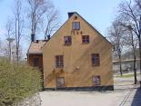  Konstskolan BASIS |
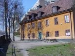 
|
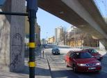 
|
Härom berättar Aftonbladet den 29 september 1847: »Från Stora varvet har i dag klockan 12 ett nytt skepp gått av stapeln,byggt för en hamburgsk skeppsredares räkning. Det lär hålla cirka 700 tons, är konstruerat avbyggmästaren på stället, herr Weilbach, och beundras allmänt ej blott för sin storlek utan även för sinskönhet. En stor mängd åskådare hade samlat sig, som beledsagade dess majestätiska nedfart med starkabifallsrop under det namnet 'Emmy' utropades. Efteråt inbjödo varvsägarna ett betydligt antal gäster tillen dejeuner, därvid åtskilliga skålar druckos med avseende på skeppsbyggeriets framsteg i Sverige m. m.» |
| Skeppsbyggmästaren, bokhållaren eller kamreraren, varvssmeden och varvsblockmakaren och tidvis de tre verkmästarna var de enda som bodde inom varvets område. Alla arbetare - det var nästan uteslutande timmermän - hade sina bostäder i grannskapet. Varvet tycks ha haft en mycket jämn sysselsättning genom tiderna. År 1692 var 65 timmermän anställda, hundra år senare var antalet 61 och år 1835 var det 74. Det sista året bodde alla utom en i Katarina församling.De flesta hade sitt hemvist i kvarteren närmast intill varvet. Och på Åsöberget i kvarteret Tjärhovetstörre bodde mer än hälften av hela arbetsstyrkan. |
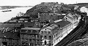  Folkungagatan 87-91. Stora varvet. Det vita huset till vänster nedanför Fåfängan är Patons eller Funchs malmgård. 1907. |
|
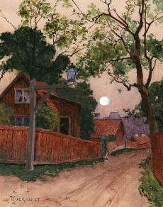 I de små rödmålade stugorna, av vilka en del finns kvar och nu utgör stadens största sam- manhängande trähusbebyggelse, var också andra yrken representerade. |
Där fanns garvargesäller och karduansmakaregesäller från Levins garveri vid Tegelviken mitt emot varvet, brädgårdsarbetare från grosshandlare C. F. Liljevalchs brädgård nedanför Fåfängan; grosshandlaren försåg varvet medvirke, som han skeppade på briggen »Terra Nova». Där bodde sidenväverskor, sidenrederskor,klädvävare och bomullsväverskor som arbetade i de många beklädnadsmanufakturerna på Söder och -som en fläkt från mycket avlägsna tider - tre tjärstuvare och en ordinarie tjärkullrare. Det dagliga livetsnödtorft tillhandahölls av två kryddkramhandlare, och i ett stånd vid Tjärhovsgatan idkade styrmansänkan Sofia Lovisa Hultman »första klassens mångleri». Naturligtvis fanns det en krog. Därstod strumpvävaränkan Anna Elisabet Lindström för trakteringen Liksom många andra områden i Stockholms utkanter var trakten omkring Stora varvet en liten stad för sig själv med sin egen särskilda atmosfär. Den hade en hel del gemensamt med kvarteren längre västerut ovanför Stadsgården men var på det hela taget väl avgränsad åt landsidan. Traktens förbindelser med det övriga Stockholm gick främst över sjön. Tidvis fanns det flera repslagare i trakten, men de betjänade Stadsgårdshamnen mer än varvet, som vanligen tog sitt tågvirke från annat håll, ofta från Kungsholmen. |
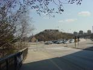 
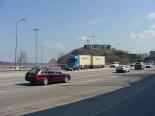  |
|
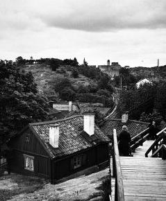 Trapporna från Åsöberget ned till Kvastmakar- gatan. 1924 |
Näst efter de fyrtio varvstimmermännen och blockmakaregesällerna och deras familjer var sjöfolket den största gruppen i kvarteret Tjärhovet större enligt mantalslängden 1835. Främst på den sociala skalan stod »coopverdieskepparen» Johan Arvidsson, som var borgare och förde sitt eget fartyg, galeasen »Patrioten»om 73 lästers dräktighet. I kvarteret satt även en skepparänka, sju sjömän, tre skeppstimmermän, en tulluppsyningsman och tre sjötullvaktmästare. Från sin upphöjda plats på Åsöberget hade de den bästa delen av Stockholm under sina fötter. De kunde i detalj följa arbetet på varvet ifrån det kölen sträcktes till ett nytt fartyg till det ögonblick då det gick av stapeln. De såg gamla skepp och skutor löpa in till varvet för att repareras. Och de hade hela segelleden till Stockholm framför sig. Men fram mot mitten av seklet hade »flytetyg av en förunderlig skapnad» börjat visa sig i synfältet. Och mittibland sig hade folket på Åsöberget en representant för detta nya fortskaffningsmedel, maskinisten på ångfartyget »Herkules». Stockholms och Sveriges första ångbåt i trafik var »Amphitrite», som från och med 1818 gjorde regelbundna turer mellan huvudstaden och Drottningholm. Den andra hette »Stockholm». Båda var konstruerade och byggda av »den svenska ångbåtstrafikens fader», engelsmannen Samuel Owen. |
Den tredje bar det stolta namnet »Yngve Frey» och var byggd på Stora varvet, vilket visar, att detta gamla varv låg väl framme i konkurrensen, även sedan »eldbåtarna» börjat sin stånkande seglats. Maskineriet hade dock levererats av Owen. »Yngve Frey» sattes i trafik våren1821.
| Den nya tiden var obevekligt på väg. Genombrottet kom vid seklets mitt med ångbåtsfartens »järn- och propellerålder». John Ericssons propeller medförde många fördelar, bland annat fick fartygen en »jämnareoch snabbare framfart» och ett prydligare utseende. Folk började övervinna sin fruktan för fartyg byggda av järn. Redan 1819 hade överpostdirektörsämbetet fastslagit, att »ångbåtar framför andra fartyg alltid äga ett märkeligt företräde». Till och med skalderna prisade de nya krafterna. Ute vid Sandhamn hade EliasSehlstedt tillfälle att begrunda tidens nya möjligheter: |
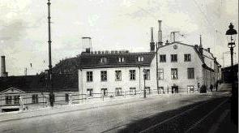 Folkungagatan 87 från väster. Tegelvikstorget. 1923 |
|
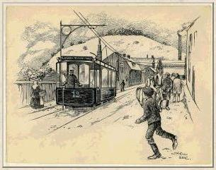 Spårvagn nr 12 på Folkungagatan österut i närheten av Tegelvikstorget. I bakgrunden Fåfängan. Teckning av Nils Kjellberg. Spårvagnen är en elspårvagn. Alla Söders spårvagnar övergick till elektrisk drift 1901. |
»Nu ha vi ångbåtar i parti. Och tänk vad mängd utav spekulanter med stora pungar med pengar i skall strömma hit från alla kanter, vår skeppsfart blomstra, vår handel ökas, och glömda dalar och fjäll besökas av industrin.» För Stora varvet kom genombrottet med Weilbachs tragiska död 1853. Han hade i sin tjänst en verkmästare William Lindberg, som helt var de nya idéernas man, både på grund av en utpräglad mekanisk begåvning och en sorgfällig utbildning. Redan 1847 hade Lindberg, som då titulerades varvssmedjeföreståndare, en liten mekanisk verkstad i Tjärhovsgatan 85, öster om Tegelviken. Första året arbetade han ensam i verkstaden och redovisade ett tillverkningsvärde av 1 000 riksdaler. Men redan året därpå har han 25 man i arbete, och tillverkningsvärdet har stigit till 20 000 riksdaler eller lika mycket som för varvet på andra sidan viken med sina 64 anställda. 1855 övertog Lindberg arrendet av varvet. |
| I kommerskollegiets fabriksberättelser, som ger oss möjlighet att år för år följa utvecklingen, skiljer man mellan verksamheten vid varvet och vid den mekaniska verkstaden. Varvsräkenskaperna talar inte längre om nybyggda segelfartyg. Det sista större segelfartyget som timrades upp i Stockholm torde ha varit skeppet »Adolf Fredholm» om 177 läster. Det byggdes på Djurgårdsvarvet 1863 och uppkallades efter dess siste ägare, grosshandlaren och redaren Adolf Fredholm. Samma år upphörde detta anrika varv, som under hela 1800-talet haft betydligt större omsättning än Stora varvet. Stora varvet hade då i flera år endast utfört reparationer av segelfartyg,och tillverkningsvärdet sjönk stadigt, även sedan Djurgårdsvarvet nedlagts. |
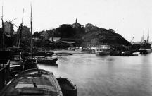  Tegelviken västerut mot Erstaberget. Tegelviken västerut mot Erstaberget. |
|
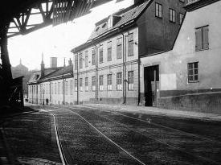 Folkungagatan 89-87 (141-139) från öster. |
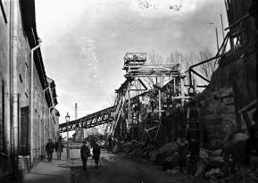 Folkungagatan 87-91 (139-143) från väster. Saltsjöbanans viadukt byggs över Folkungagatan. Saltsjöbanan invigdes 1893. |
Det var den mekaniska verkstaden som bar upp rörelsen. Även om järnfartyg stapelsattes på det gamla varvsområdet hade tyngdpunkten förflyttats till andra sidan viken. År 1865 redovisar varvet 108 anställda.Tillverkningsvärdet - för reparationer av segelfartyg - har sjunkit till 25 000 riksdaler, och den maskinella utrustningen inskränker sig till en ångsåg om tio hästars kraft. Samma år har den mekaniska verkstaden 189 anställda. Den lilla verkstaden från 1847 har uppslukat de äldre anläggningarna på platsen, bland annat det förut nämnda garveriet, och omfattar nu större delen av kvarteret. En rest av verkstaden finns i kåkkvarteret strax väster om Fåfängan. |
| »Vilken skillnad inom skeppsbyggerikonsten nu mot förr, eller den tid då Södra varvet anlades»,utropar en författare i Ny Illustrerad Tidning 1871. »Visserligen byggas där fartyg och båtar, men de flesta av dem äro av järn och ha utbytt seglen mot ångan. Ej möter man numera så uteslutande som förr de blå och röda ylleskjortorna och de nedtjärade byxorna, ser kölar och skeppsbottnar vända i vädret och lågorna från påtända tjärtunnor fladdra mot skyn, då dessa bottnar brännas och lappsalvas. Nu är det maskinister, sotiga eldare och målare, som föra herraväldet inom varvet. Timmermännen ha fått maka åt sig, och den brinnande tjäran har blivit utbytt mot oljefärgen.» |
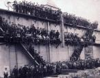  Arbetare vid Södra Varvet i Tegelviken 1894-96
Arbetare vid Södra Varvet i Tegelviken 1894-96 |
|
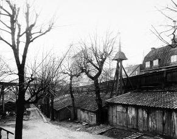 Gården till Folkungagatan 87 (119) från väster. Stora Varvet. Gammal klockstapel. 1904 |
Förändringarna gav sig till känna även på Åsöberget. Tjugoen timmermän fanns fortfarande i de små stugorna, men trettio år tidigare hade det varit dubbelt så många, och av de tjugoen familjeförsörjarna var sex änkor. Många timmermän hade lämnat plats åt järnarbetare, smeder, smedgesäller, smedlärlingar och smedhantlangare, plåtslagare, kopparslagare, filare, snickare, varvets nattvakter, skeppsbyggnadselever och mekaniska elever. Det började bli trångt på berget. Även om man trängde ihop sig, förslog utrymmet bara till en bråkdel av den stora arbetsstyrkan, som fördubblats två gånger på trettio år. Två hyreshus hade kort förut uppförts vid Tjärhovsgatan mittemot varvet. Det ena, den så kallade Gröna gården, som finns kvar än i dag på den grönskande tomten närmast Tegelviksgatan hade byggts av Arbetarbostadsfonden och ägdes av Fattigvårdsnämnden. Gröna gården var på sitt sätt en föregångare till vår tids kollektivhus. |
Där fanns bland annat gemensam bagarestuga som eldades upp en gång i veckan för alla familjerna. Varje lägenhet bestod av ett stort rum och kök. I köken var de öppna spisarna kvar ännu vid 1900-talets början; så länge var man nödsakad att laga sin mat i trefotsgrytor över bar eld. År 1865 bodde bara sex av Lindbergs arbetare i Gröna gården, men det berodde inte på att man ansåg att huset erbjöd
|
för liten komfort och för små utrymmen, snarare på motsatsen. Ett stort rum och kök låg nog i överkant av vad en arbetare hade råd till. En blick på husets övriga hyresgäster bekräftar detta. I detta Fattigvårdsnämndens hus, som uppförts för medel som insamlats »till minne av Hans Kungl. Maj:ts lyckliga återställande till hälsan», fanns en sidenfabriksmästareänka, två tulluppsyningsmän, en före detta taffeltäckare och en extra ordinarie hamnfogde.
|
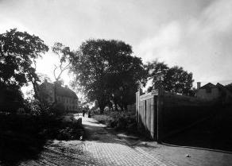 Danviks gamla kyrkogård från Tegelviksgatan mot Svenska marmeladfabriken vid Bondegatan 83.
|
{kind=link}
| Redan på 60-talet bodde en del av varvets arbetare i Djurgårdsstaden, vilket väl beror på att Stora varvet övertagit en del av Djurgårdsvarvets arbetarstam. På dagarna gick ångslupar mellan Tegelviken och Djurgården och på kvällarna och nätterna tog hamnroddarna vid. Bland arbetarna på 60-talet fanns det även ett tiotal pojkar, mest söner till varvsarbetare. De värmde nagel vid små ässjor åt dem som nitade pannplåt. Man arbetade i lag, och varje »nitarlag» hade sin nagelpojke. När William Lindberg dog 1877 bildade arvingarna »W. Lindbergs verkstads- och varvsaktiebolag». Kölen hade då sträckts till det hundratrettioåttonde fartyget av järn. Det första,»Götha», byggdes 1855 och skrotades vid samma varv 1890, varvid plåten användes till en pråm för transporter av ångpannor inom varvet. |
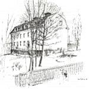 
Gröna gården |
|
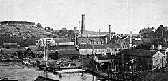  Stora Varvet från väster. Tegelvikstorget i mitten mellan husen. Längst upp till höger syns Gröna gården och uppe till vänster ligger Fåfängan.
Stora Varvet från väster. Tegelvikstorget i mitten mellan husen. Längst upp till höger syns Gröna gården och uppe till vänster ligger Fåfängan. |
När Bärgnings- och Dykeriaktiebolaget Neptun grundades - det skulle bli ett av världens förnämsta företag i sitt slag - byggdes dess första bärgningsångare »Neptun» på Lindbergs varv. Ett annat känt fartyg som konstruerats här är Finska Ångfartygsaktiebolagets »von Döbeln», som sjösattes 1876. Den första ångare som löpte av stapeln efter Lindbergs död uppkallades efter honom och levererades till Waxholmsbolaget. Den förstärktes vid ett par tillfällen på 1890-talet och kunde därefter nödtorftigt användas i vintertrafik om den följde i Finlands- och Gotlandsbåtarnas isrännor.Därmed hade den moderna på ångkraften byggda tekniken tagit ett nytt steg för att bryta Stockholms vinterdvala. |
|
När isarna kom lade segelfartygen upp, kajer och bryggor låg öde och övergivna, tillförseln avbröts. Det lilla som kom in på vintervägarna förslog inte långt. Det var i vart fall ingenting att bygga på; en barvinter kastade omkull alla beräkningar. Den gamla förrådshushållningen var lika nödvändig i städerna som på landsbygden. Folk boade in sig så gott det gick, levde på salt och torr mat, som sköljdes ner med stora kvantiteter öl - öl och brännvin tillhörde livets nödtorft - och inväntade våren. Det första steget för att bryta isoleringen och våra fäders livsföring togs, när Stockholm fick sin första järnväg, det andra och viktigaste när sjöfarten kunde upprätthållas året runt. Från och med 1870 fick Södra varvet, som Lindbergs omfattande företag nu vanligen kallades, en ny konkurrent i Bergsunds mekaniska verkstadsaktiebolag på motsatta sidan av Södermalm. Företaget, som går tillbaka till 1769, blev så småningom Owens närmaste arvtagare i Stockholm. En tid använde man sig av Långholmsvarvets slip, men rörelsen gjorde konkurs och efterträdaren fick vind i seglen först efter bolagsbildningen 1870. |
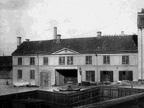 Tegelvikstorget från väster. 1923. Byggnaden syns strax höger om mitten på bilden ovan. |
|
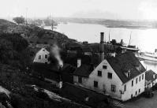  Hörnet Folkungagatan Tegelvikstorget från sydost. 1922. Här går nu Londonviadukten fram.
Hörnet Folkungagatan Tegelvikstorget från sydost. 1922. Här går nu Londonviadukten fram.
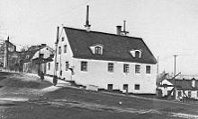  Folkungagatan 137 mot väster vid nerfarten till Stora varvet (nu Tegelviksplan). 1 april 1907
Folkungagatan 137 mot väster vid nerfarten till Stora varvet (nu Tegelviksplan). 1 april 1907 |
Det tycks ha varit Södra varvets öde att alltid vara det andra i sin stad. När Lindberg 1874 byggde ångbåtar för en halv miljon kronor, byggde Bergsunds för en dryg miljon. Lindbergs varv och verkstad som då sysselsatte 475 anställda redovisar ett sammanlagt tillverkningsvärde på över en miljon kronor, Bergsunds med sina 600 arbetare drygt en och en halv miljon. När Södra varvet vid sekelskiftet tog upp traditionerna från 1700-talet och byggde torpedkryssaren »Claes Horn» byggde Bergsunds tre örlogsfartyg. Arbetsuppgifter fanns emellertid för båda företagen. På båda håll hade man dock svårigheter att skaffa bostäder åt den växande arbetsstyrkan. På 1890-talet passerades i det fallet ett nytt högvattensmärke. Då tillkom också flera av Södra varvets mest kända fartyg. Det största som någonsin byggts på varvet var tusentonnaren »W. Lindberg» som 1893 levererades till ett ryskt oljebolag i Baku. Samma år sjösattes Ångfartygsaktiebolaget Södra Sveriges »BirgerJarl», som när rederiet sammanslogs med Sveabolaget övergick i dess ägo och fortfarande seglar under dess flagg. Bland de av varvets många skapelser som stockholmarna ännu kan glädja sig åt är Mälarångaren »Mariefred», som sedan 1903 företagit ett otal lustresor utmed Mälarens stränder. Under 1800-talets sista år löpte Gotlandsbolagets »Hansa» av stapeln. Fartyget - ett av Östersjöns vackraste - blev sorgligt ryktbart genom en av de största katastrofer som drabbat svensk östersjöfart, när det en novembernatt under andra världskriget sjönk efter en explosion, varvid 87 personer omkom. |
|
Under 1800-talets tre sista decennier var Södra varvets framtid vid Tegelviken hotad av den redan på 1860-talet planerade utvidgningen av Stadsgårdshamnen. Men först 1898 började sprängskotten eka vid Söderbergs trappor, och det skulle dröja ända till 1906, innan arbetet nådde Erstaberget. Den 16 januari1907, när varvet ägt bestånd i 220 år, skedde den sista stapelavlöpningen, »i det Lidingö trafikaktiebolags ångfärja gled ner i det våta elementet». Den 2 augusti 1910 invigdes den nya Stadsgårdshamnen och dess uppfartsväg till Folkungagatan. Den som i dag söker lokalisera varvstomten har inte många märken att gå efter. Men på en minnestavla i Londonviaduktens mur finner han följande äreminne: |
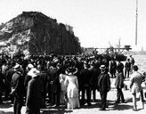  Stadsgården från öster. Invigningen 1910. Uppe på berget syns Ersta sjukhus.
Stadsgården från öster. Invigningen 1910. Uppe på berget syns Ersta sjukhus. |
»Nydaningens ande gick fram över denna nejd i begynnelsen av tjugonde seklet nedbrytande vad gammalt var och byggande denna väg från de ävenledes nybyggda kajerna. Sedan två och ett kvarts sekel hade skepp och farkoster för handel och örlig byggts på denna plats. Den sista farkosten lämnade dess bäddar sommaren år 1907 och Stockholms Stora Skeppsvarv var icke mer. Ho kan mäta djupet av det tankens arbete, som genom århundraden närde livet hos den nu döde och ho kan fatta vidden av den händernas id, som gav formerna? På det att minnet av det här förgångna ej må dö och såsom en gärd åt arbetet uppsattes denna tavla av varvets siste skeppsbyggmästare år 1919.»
|
från CD-skivan Söder i våra hjärtan |
Ur Se på Söder, Olle Rydberg |